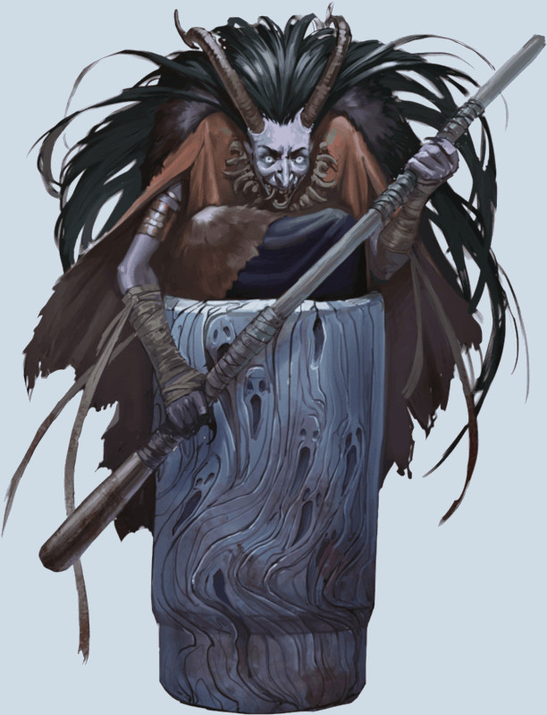

Baba Yaga's Mortar and Pestle
[
Mortier et Pilon de Baba Yaga
]
Wondrous item, artifact (requires attunement)
This magic item's description is not available (not OGL).
Tasha´s Cauldron of Everything
→
DnD 5e Magic Items
